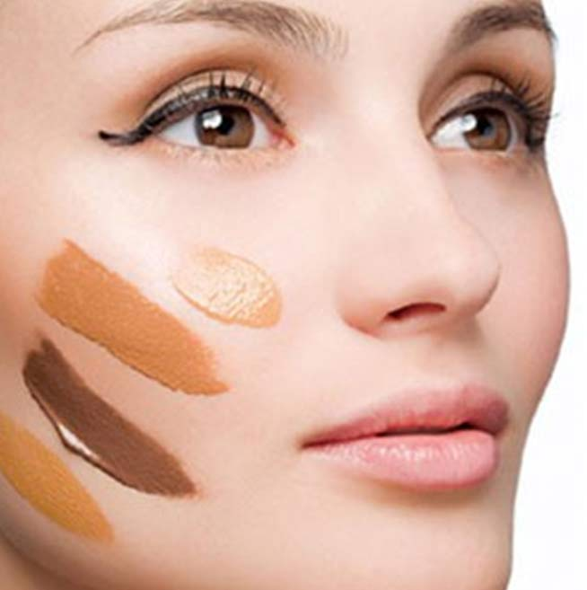
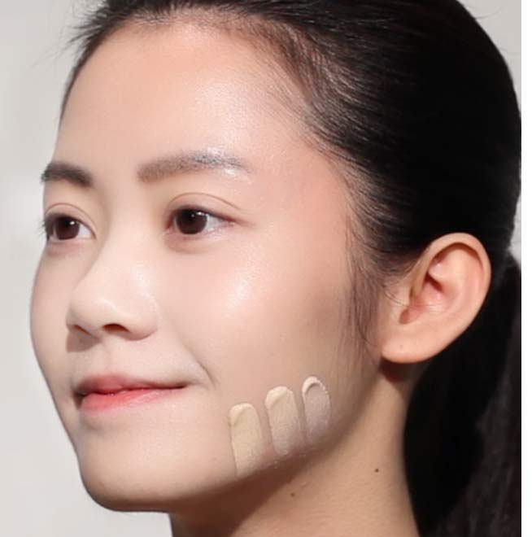

首先，要选对颜色哦，不要以为黄种人就是“暖色调”人，影响肌肤色调的关键是肌肤表层静脉血管的分布。蓝色静脉血管越明显，肌肤表皮薄的人，大部分都属于冷色调，应该选择粉红调多一点的粉底；暖色调肤色的人，象牙色系粉底能够衬托出健康气色哦。
每一季的肤色都可能随着阳光照射而有变化，亲自试下颜色绝对好过糊里糊涂听别人介绍哦。现在就告诉你试粉底的小窍门！
以手指沾取不同颜色的粉底液，画直线并列在脸颊下方与颈部交接处，在光源正确且充足，如自然日光下观察，最吻合肤色并且与颈部肤色最接近的就是最适合的粉底颜色。

除此之外，选粉底，还要根据肤质和季节来选择：
干性：干燥寒冷季节，建议使用粉底霜或滋润些的粉底乳。
混合性：使用粉底乳、粉饼都可以。
油性：湿润温暖季节，建议使用隔离底霜后再使用粉底乳、粉饼。